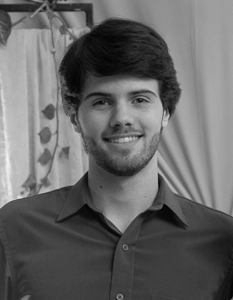

Front-end Developer & Web Designer
Computer Engineering student crafting clean, responsive interfaces — and turning data into insight with Python & R. Based in Brazil, working globally.
I'm a Computer Engineering student at UFPel with a hands-on background in front-end development and web design, building websites with HTML5, CSS3, JavaScript, Wix and WordPress.
What sets me apart is the blend: I also work in data analysis and research, applying Python (Pandas), R, and statistical models to real-world problems in academic settings.
I'm obsessively detail-oriented, a fast learner, and fluent in English — ready to deliver high-quality work for teams anywhere in the world.
Years building for the web
Technologies mastered
Active roles & projects
Languages spoken
Computer Engineering
Federal University of Pelotas — UFPel
2015 – 2026
Semantic markup, responsive layouts with Flexbox & Grid. Pixel-perfect implementations from any design file.
DOM manipulation, events, interface logic, and interactive experiences for the modern web.
Full website builds on Wix and WordPress (Elementor). Custom layouts, visual identity, and content management.
Data analysis with Pandas, web scraping, numerical methods, and graphical interfaces with Tkinter.
Linear & multiple regression, generalized linear models, and statistical data analysis in RStudio.
Visual identity, responsive layouts, branding alignment, and UI design with a strong eye for detail.
2026 — Present
Front-end Developer
GAMA Project — UFPel
Development and maintenance of the institutional website. Responsive layouts, visual identity adjustments, and content publication in collaboration with the research team.
May 2025 — Present
Research Fellow
Federal University of Pelotas
Computational tools applied to teaching and research. Development of solutions for academic use and assistance in workshop creation.
Sep 2024 — Aug 2025
Undergraduate Researcher
Federal University of Pelotas
In-depth study of regression models (Simple, Multiple, GLMs). Real-world data analysis using RStudio and Python in practical research contexts.
2018 — Present
Academic Developer
Federal University of Pelotas
Numerical methods in Python, cache simulator, Tkinter GUI development, web scraping, and statistical studies with Pandas & R.
Institutional website for a UFPel research project. Responsive layouts & visual identity.
Applied statistical models to real-world datasets using RStudio and Python for academic research.
Implementation of a cache simulator with a graphical user interface built in Tkinter.
Modern landing page with fluid layout, custom animations, and mobile-first design approach.
Automated data extraction tool built in Python for collecting & structuring web data.
Small business website built on Wix — branding, layout, and mobile optimization.
Have a project in mind? Let's talk.